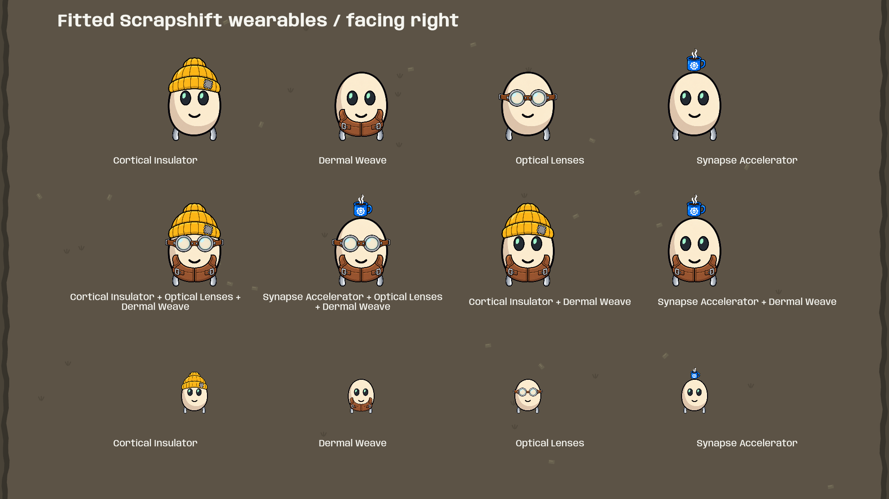
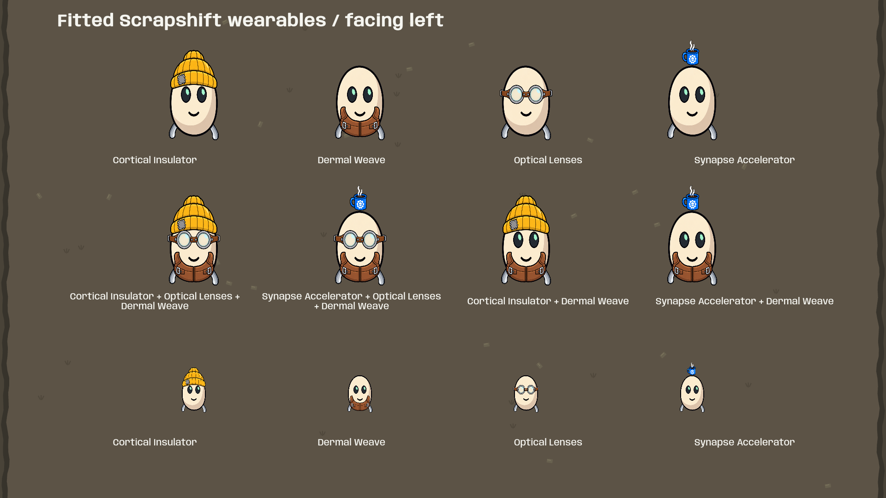
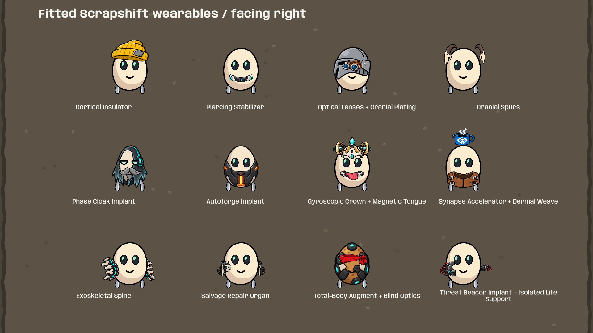
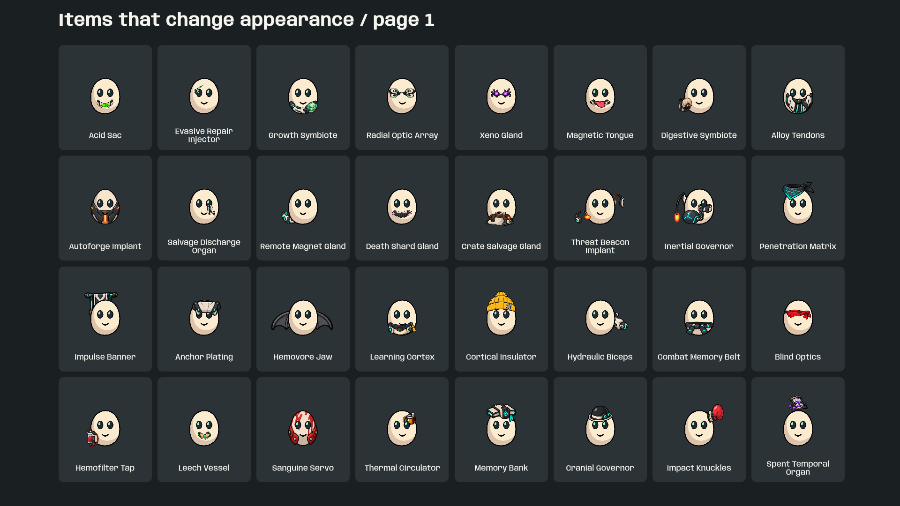
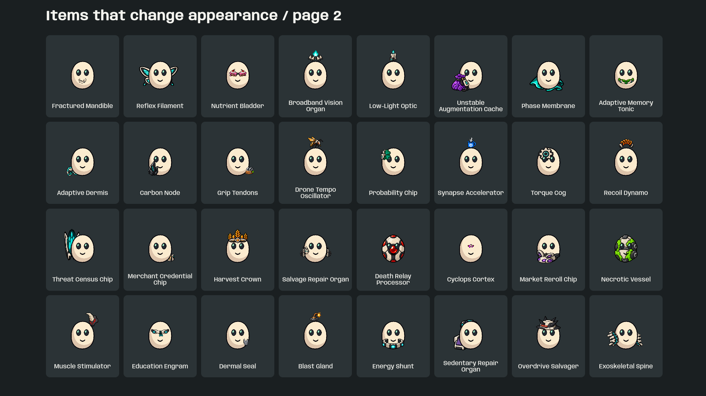
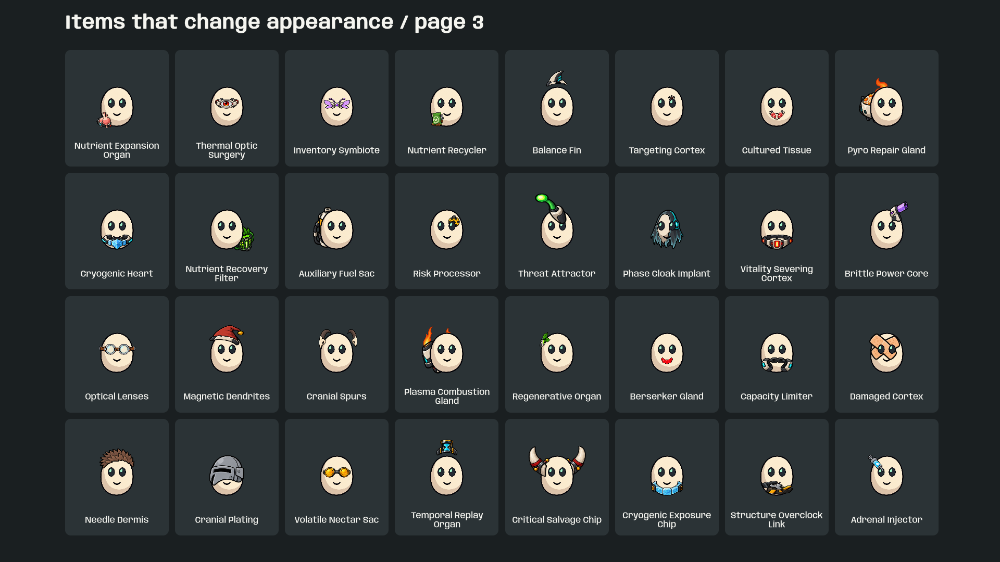
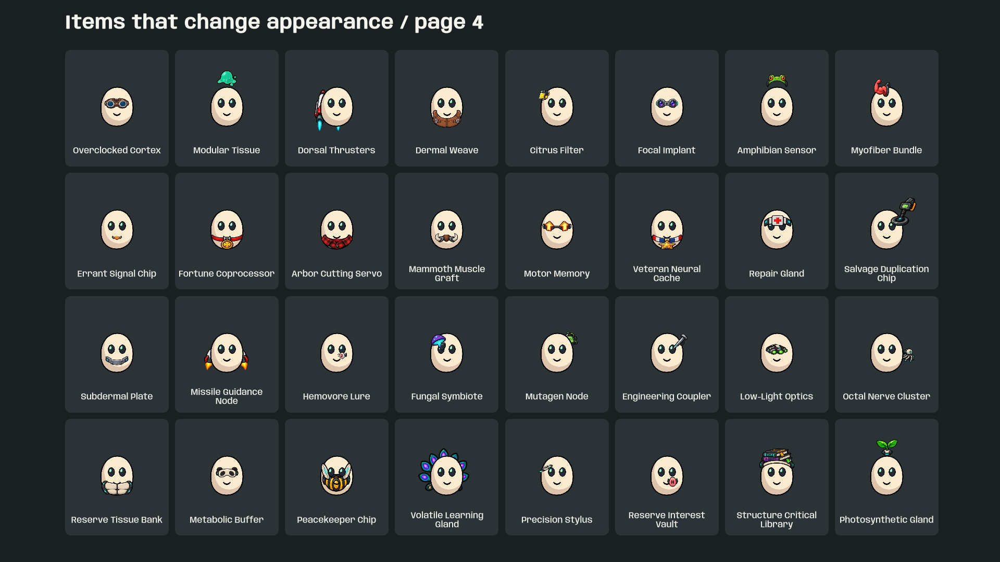
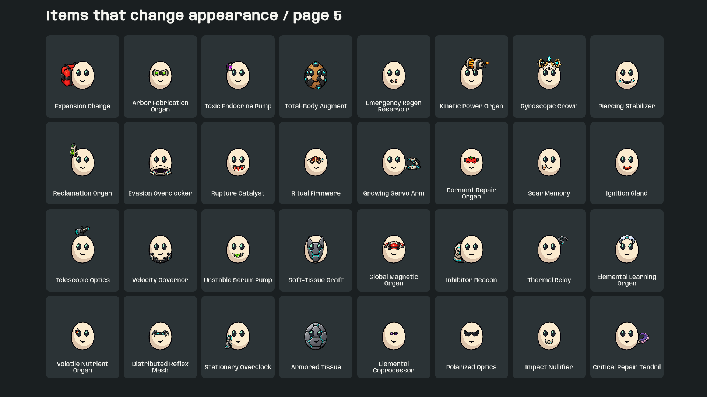
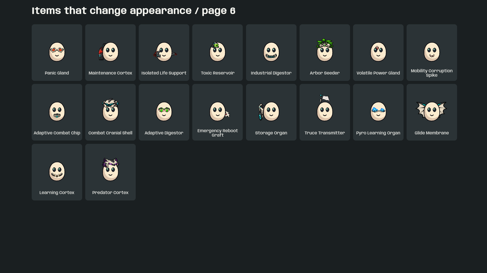

Branch: codex/appearance-parity. Only these four item appearances changed. Each uses its own full transparent 1254 × 1254 canvas, registered to the player’s body origin at 627 pixels per world unit. No slot-based resizing or nonuniform stretching. Artwork registration is stored in each sprite’s pivot; the same origin is used by the world renderer and portraits.
Top row: each item alone. Middle row: combinations. Bottom row: smaller characters to check readability. Coffee sits above the head, as in the original reference. The rest of the item art still needs a separate fit review.


Launch updated Windows build · Native renderer checks · Tests







Created with the built-in imagegen tool, using Scrapshift’s player and inventory artwork. Saved in Assets/Scrapshift/Content/OriginalArt/TemplateWearables. PNGs retain their generated pixels and transparent margins.